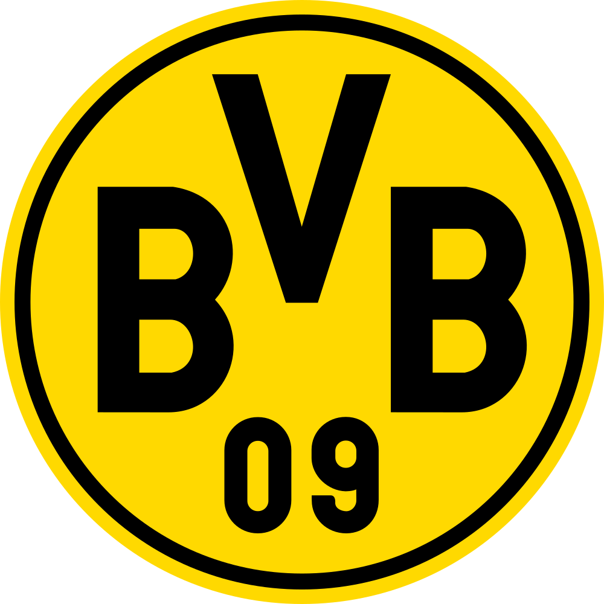
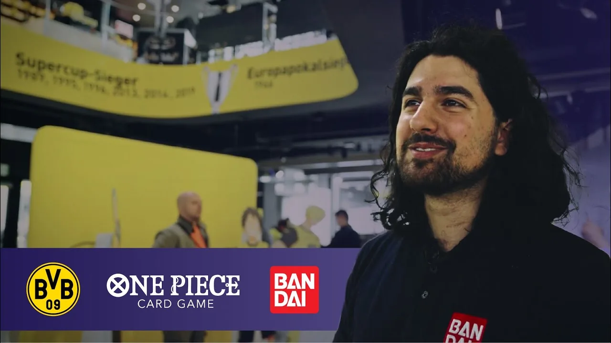
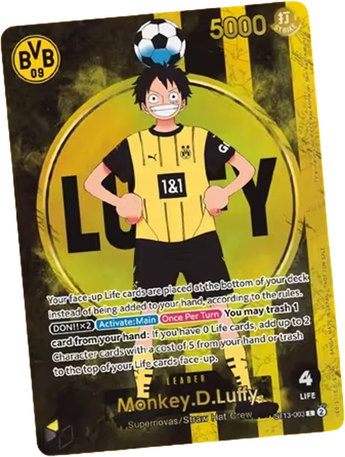
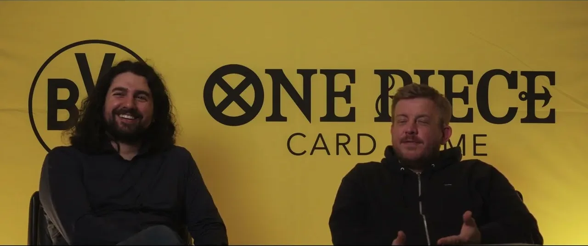
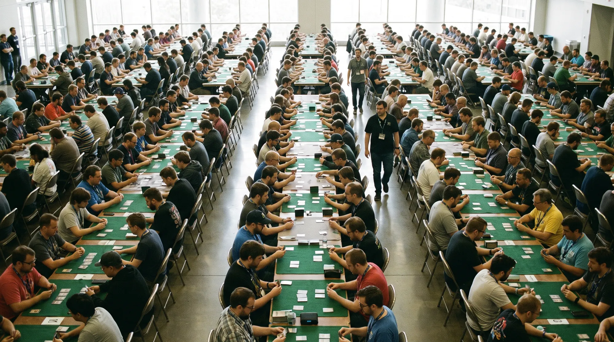
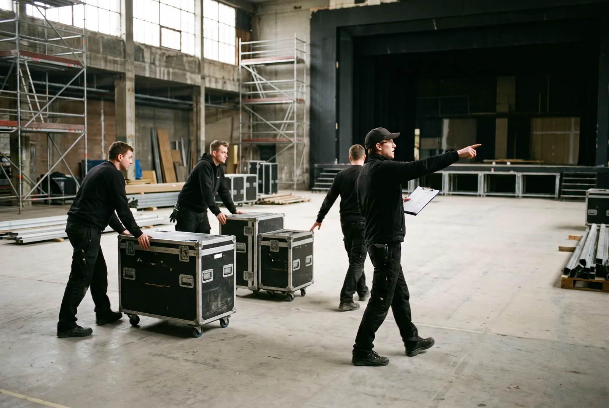
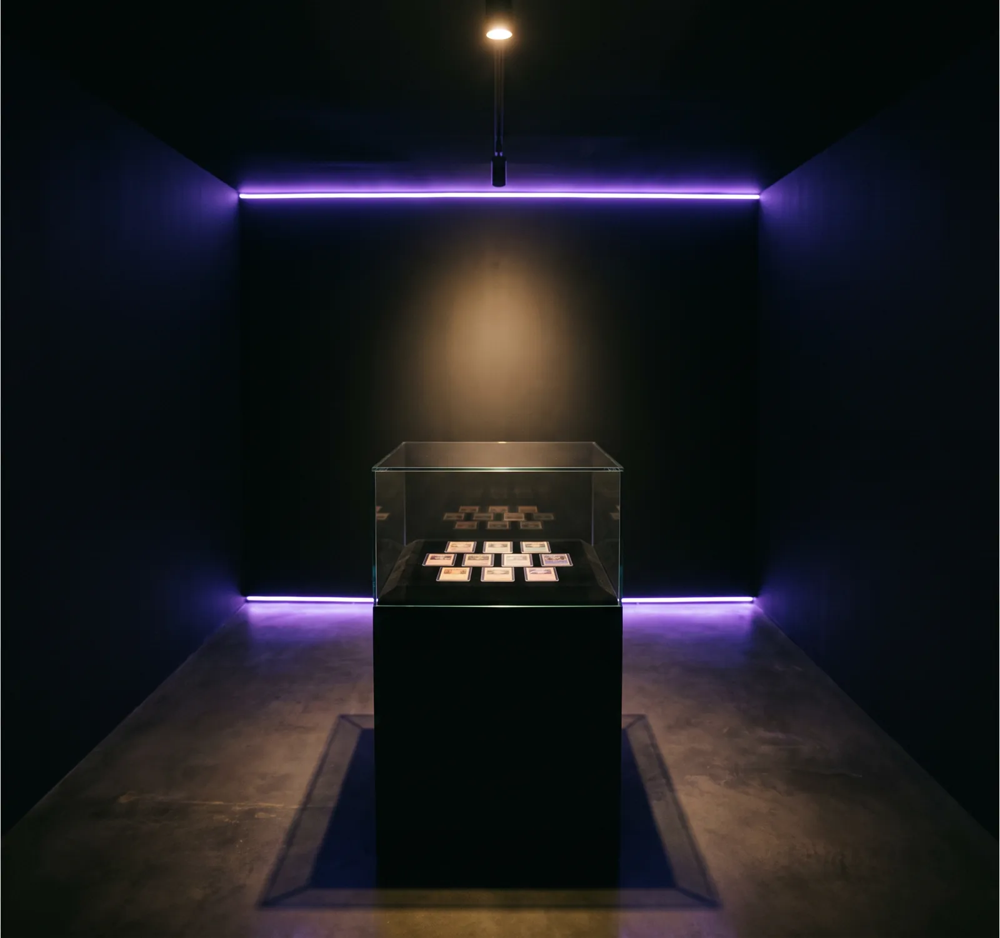
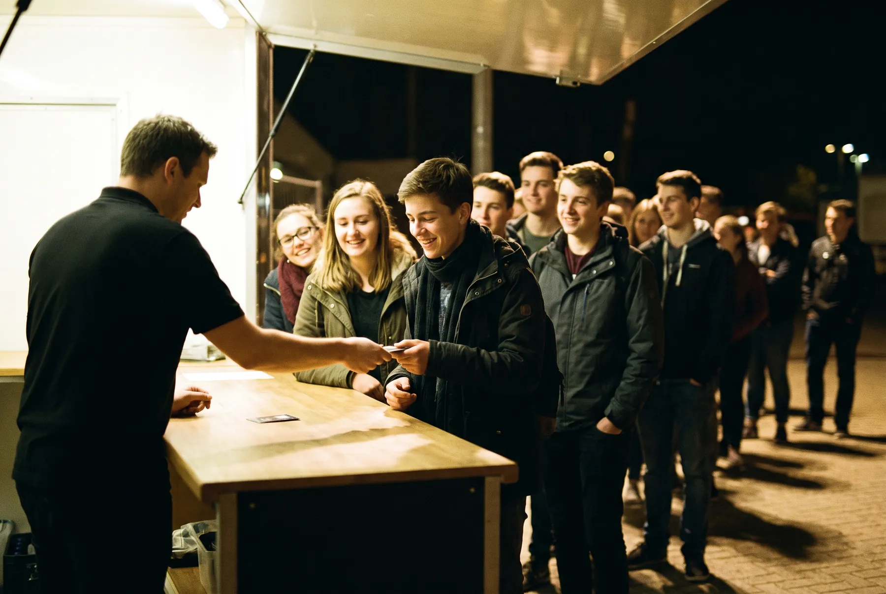
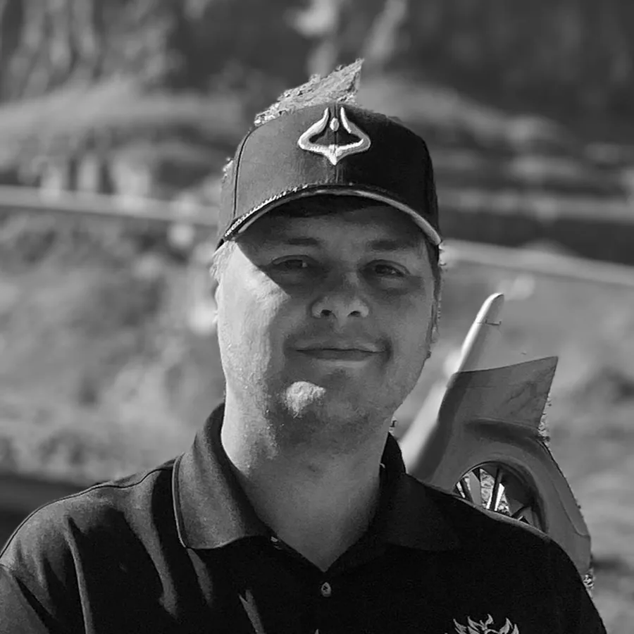
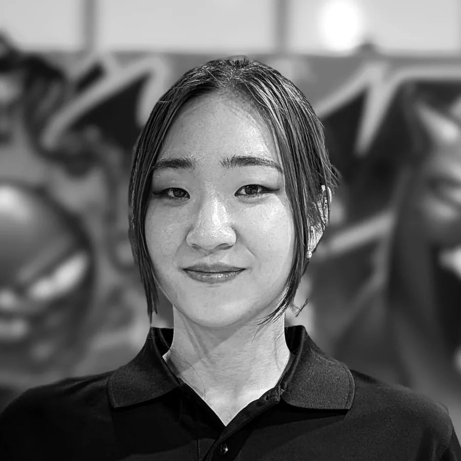

The situation
Borussia Dortmund wanted an audience that does not come to the stadium. Bandai wanted the card game in front of people who had never held a card. Two huge followings, no shared ground.
Brand Partnership Agency
We connect brands with fan communities in gaming, anime and sport. From the first idea to the last day on site, in one contract.
20 minutes, no deck required. Or call +49 2102 8764 700
Bandai lists CS-International GmbH as an official host for ONE PIECE CARD GAME Regionals in Europe. See the tournament calendar
Countries with official tournaments: Germany, France, the Netherlands
Player scale at which a Regional earns 32 Finals invitations
Days the BVB x ONE PIECE activation ran in the Fan World
Brands and rights holders we have worked with

Case study
A German football club and a Japanese card game share no audience, no language and no reason to care about each other. We found the one, and built something both sets of fans accepted as genuine.

Borussia Dortmund wanted an audience that does not come to the stadium. Bandai wanted the card game in front of people who had never held a card. Two huge followings, no shared ground.
Build something both communities would accept as genuine. Not a logo on a board. Something a football fan would queue for and a card player would keep.
Initiated the partnership, developed the concept with all three rights holders, and ran the activation on the ground. Free beginner rounds, the promo card as the reward, goodie bags in the stadium.

The artefact
An activation people talk about needs something they can take home. So the reward was not a voucher. It was a card that existed nowhere else, in the club's colours, playable in the game's official format.
The result
The card left the stadium and kept going. Among collectors the BVB Luffy became one of the most sought after promos of the season, traded far beyond Dortmund.
Both partners reached an audience the other one owned. Neither had to explain to their fans why the other was there. That is the whole test, and it is the one most activations fail.
In our partner's words

The full record
| Occasion | Bundesliga home fixture against 1. FSV Mainz 05, 30 March 2025 |
|---|---|
| Venue | SIGNAL IDUNA PARK and BVB Fan World, Dortmund |
| Period | 24 March to 5 April 2025, 13 days |
| The product | Monkey D. Luffy ST13-003 Leader card in BVB colours, available through this activation only |
| Mechanic | Free beginner rounds hosted by Bandai Card Games, promo card as the reward |
|---|---|
| On matchday | Goodie bags with scarf, stickers and the promo card, distributed inside the stadium |
| Partners | Borussia Dortmund, Bandai Card Games, Toei Animation |
| Our role | Initiated the partnership, concept, coordination between rights holders, on-site delivery |
The credential
We run official ONE PIECE CARD GAME Regionals in Europe. Not as a supplier to an organizer. As the organizer. Registration, judging, floor plan, logistics, staff and stream, at championship level.

Do not take our word for it CS-International GmbH is named on Bandai's own tournament calendar as the host for the Utrecht Regional, alongside a handful of other operators in Europe. The page is public.
Check Bandai's calendar| Date | City | Venue | Format |
|---|---|---|---|
| 5 to 6 Sep 2026 | Utrecht, Netherlands | Jaarbeurs Utrecht | Regional, Championship 26-27 Season 2, part of BCG Fest |
| 1 to 3 Aug 2026 | Rungis, France | Parc Icade Orly Rungis | Last Chance Qualifier, Finals Season 1, first Regional of Season 2 |
Scale for context: a Regional with 800 or more players awards 32 invitations to the Finals instead of the standard 16. That is the bracket we operate in.
A rights holder does not hand championship play to an agency it has not checked. When you brief us, the due diligence a Japanese publisher does on its European operators is already behind us.
We do not brief a supplier and hope. We have stood in the hall at seven in the morning, so the budget we give you is the one the day actually needs.
You do not have to build a community from nothing. We can place your brand inside events that fans already travel to, in a role the community reads as belonging.
The problem
Once with the fans, and once in your budget review. Most agencies plan for the first test. The second one is where the budget quietly dies.
Fans can tell within seconds whether a brand belongs. Get it wrong and the punishment is public: the comments turn, creators stay away, and the campaign becomes the thing your audience jokes about.
A logo on a board has never bought its way out of that. There is no media spend that makes a community change its mind about you.
Then someone asks what came of it. Sponsorship takes around 12 percent of marketing budgets and is now compared against every other channel: qualified contacts, conversations, influenced revenue.
Four out of five of your peers cannot defend the spend they already made. That is the gap we build into every brief.
We build for both tests. That is the whole job.
See how we measure itServices
Four things we deliver, and two we happen to have in house that most agencies have to buy in.

Concept, production, logistics, on-site operations, digital amplification and community management. One contract, one point of contact, one team that answers for the whole thing. You do not have to stitch five suppliers together.

Esports tournaments, curated pop-up stores, fan activations. Precise planning and full on-site management, so your audience does not just attend. They remember.

Your audience is not limited by borders and neither are we. We localise the strategy without losing your brand’s identity: the right language, the right place, the right people. Official events run in Germany, France and the Netherlands.
Broadcast quality live production on the day, and a content plan that keeps the community engaged for the other 364. One event gives you a spike. A content strategy gives you a relationship.
Both of these normally sit at a subcontractor. Ours sit at the next desk, which is why we can promise a date and keep it.
Tournament operations for trading card games and esports, at official championship level. Rules, judging, registration, floor, staff, stream. If you hold an IP and need a European tournament structure, this is what we already do for Bandai.
A lead game designer in house. Formats, mechanics and play experiences built for a brand rather than bolted onto one. Useful when the activation needs something to actually play, not just something to look at.
How it works
Five steps. The first one is a phone call. After that you approve rather than coordinate.
You tell us which audience you want to reach and what success looks like. We tell you straight away whether we are the right partner, and if we are not, we say so and point you somewhere better.
Twenty minutes. No deck, no brief, no obligation.
Book the callWe come back with a concept, the partners we would bring in, and the KPIs we will report against. Agreed before anything is built.
We negotiate with rights holders, licensors and venues. This is the part that usually stalls internally. It is our normal working day.
Build, print, ship, staff, permits, schedule. Our logistics agent runs this. You approve, you do not coordinate.
We are there on the day, from set-up to tear-down. Then the stream, the content, and the post-event report.
How long steps two to five take depends almost entirely on how many rights holders are involved and whether a physical product is in play. We will not guess at it here. You get an honest timeline in the first call, including whether your target date is realistic.
Three things. Everything past them is our problem, and that is the entire point of hiring us instead of five suppliers.
Measurement
Most activation reports are assembled after the fact from whatever the partner happened to log. That is why they never tie back to your KPIs, and why you cannot defend the spend in the next budget round. We do it in the other order.
The KPIs go into writing before a single thing is produced, together with the report format you will get at the end. If a number matters to your board, it goes on the list now, not after the event.
Measured on site by our own team, not estimated afterwards from a partner’s spreadsheet.
Against the KPIs you signed off, with no interpretation needed. Something you can put in front of a budget committee.
Ask for a sample report before you brief anyone You should not have to take our word for the reporting either. We will send you one, so you can check whether it is the document your budget review actually needs.
Get a sample reportThe crew

Runs our official ONE PIECE CARD GAME Regionals.
Gets the build, the stock and the staff to the venue on time.

„As founder and CEO, my responsibility is clear: to ensure that our clients can focus on their brand, while we deliver the kind of community-driven experiences that our fans remember, and competitors respect. Our work speaks for itself, and so do the partners who recommend us."
Questions
A brand partnership agency connects your brand with an audience it cannot reach on its own, usually through a rights holder, an IP or a community that already has that audience's trust. CS International initiates the partnership, develops the concept with all parties, produces it, runs it on site and reports on it afterwards. In practice that means we negotiate with licensors and venues, handle logistics and staff, and stand at the activation on the day.
By being part of the community before we sell anything to it. We run official ONE PIECE CARD GAME Regionals in Europe for Bandai, which means our team sits in tournament halls whether or not a brand is paying for it. Fans notice within seconds when a brand does not belong, and no budget fixes that afterwards. We build the activation around something the community already values, then bring the brand into it.
We agree KPIs before anything is built, not after. Depending on the brief that includes participation, dwell time, footfall, earned media, community sentiment, stream and social reach by market, product movement and qualified contacts. You receive one post-event report against those exact KPIs. This matters because only 19 percent of advertisers say they are confident in their sponsorship ROI, and an activation you cannot report on is an activation you cannot repeat.
Both, in one contract. Concept, production, logistics, permits, staffing, on-site operations, stream and follow-up content. We have a logistics agent and a project manager in house precisely because the gap between a good concept and a working activation is where most projects break. On the day of the activation, our team is in the building from set-up to tear-down.
Yes. Cross-border delivery is a core service, not an add-on. We have run official tournaments in Germany, France and the Netherlands, and we localise strategy per market rather than translating one campaign into several languages. That covers language, cultural references, local partners, venues and regulations. Your brand identity stays the same in every market. What changes is how it is introduced.
The main drivers are the number of markets, whether a physical product is involved, venue and rights costs, the length of the activation, and how much live production you want around it. A single-market activation and a multi-country rollout with a licensed product are different orders of magnitude. We give you a cost frame in the first call, before either of us invests time in a proposal.
It depends almost entirely on how many rights holders are involved. A single-market activation with one partner moves quickly. A collaboration involving two rights holders and a licensed physical product, like BVB x ONE PIECE, needs considerably longer, mostly because approvals and production lead times sit outside anyone's control. We tell you the honest timeline in the first call, including whether your target date is realistic.
We are a German GmbH, registered as CS-International GmbH under HRB 104368 at Amtsgericht Düsseldorf, VAT ID DE363290472, managing director Danilo Cavalieri. We hold a zero tolerance anti-bribery policy: no bribes, no kickbacks, no exceptions, and our partners and suppliers are held to the same standard. If your buyer needs supplier documentation before your marketing team is allowed to brief us, ask and we will send the pack.
Brand guidelines, one approval contact who can make decisions, and a budget frame. Everything else is ours: rights holder negotiation, concept, production, logistics, staffing, permits, on-site operations and reporting. The point of working with us is that your team gets one contact instead of five suppliers. If we need more than that from you, we will say so in the first call.
You bring the brand. We bring the cavalry. Whether you are planning a multi-market rollout or your next iconic activation, start with a call. Twenty minutes, no deck, no obligation.
Harkortstr. 27, 40880 Ratingen, Germany